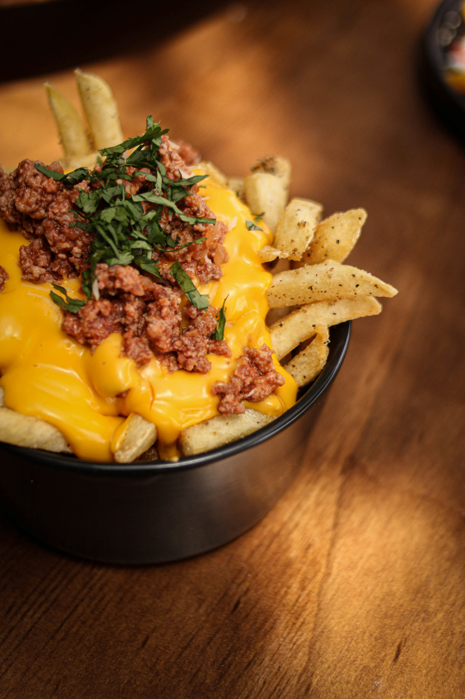

Loaded Fries

Description
These loaded sriracha fries, with Cheddar cheese, bacon, and green onions, are crispy on the outside, tender and spicy on the inside—comfort food at its finest. Add a dollop of sour cream if you like.
Ingredients
- 2 pounds russet potatoes, peeled and cut into 1/4-inch fries
- 2 teaspoons vegetable oil
- 1 1/2 teaspoons Sriracha sauce
- 1/2 cup shredded Cheddar cheese
- 2 tablespoons real bacon bits
- 2 green onions, chopped
Steps to prepare
- Gather all ingredients.
- Place cut fries in a large bowl. Cover with cold water and let stand for 20 minutes.
- Preheat the oven to 400 degrees F (200 degrees C) and line a large baking sheet with foil.
- Drain potatoes, rinse, and drain in a colander. Place potatoes back in the bowl.
- Whisk oil and Sriracha in a small bowl until smooth. Pour mixture over potatoes. Toss to coat.
- Arrange fries in a single layer on the prepared baking sheet. Bake in the preheated oven for 20 minutes. Flip fries and bake for 10 minutes more.
- Pile fries up into the center of the baking sheet with a spatula. Add shredded Cheddar and bacon bits. Return to the oven and bake until cheese is melted, about 5 minutes.
- Top with chopped green onions and serve immediately.
Home